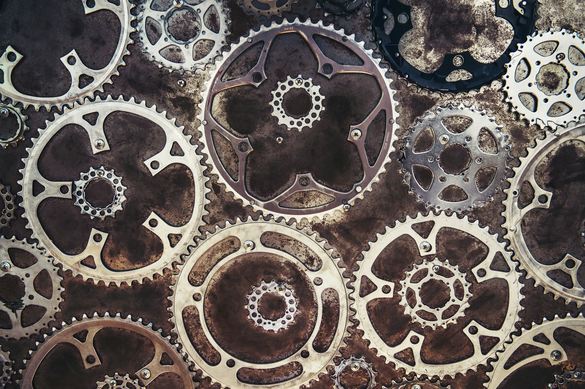
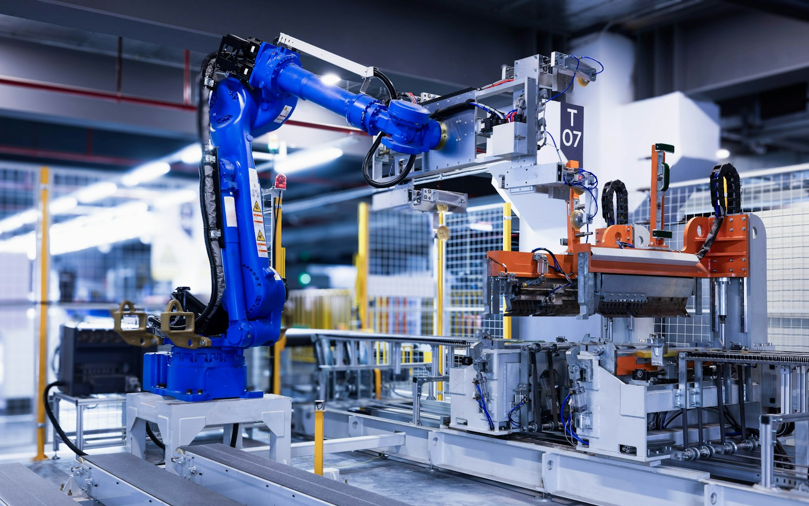
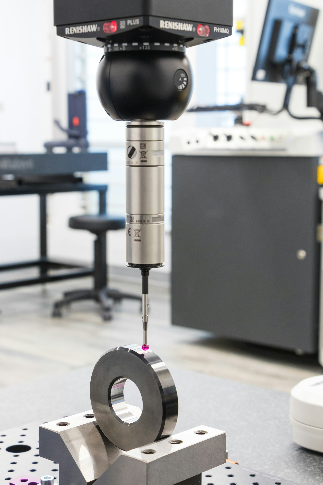
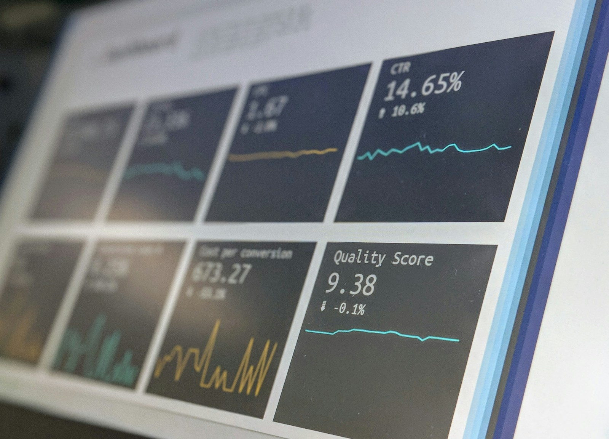
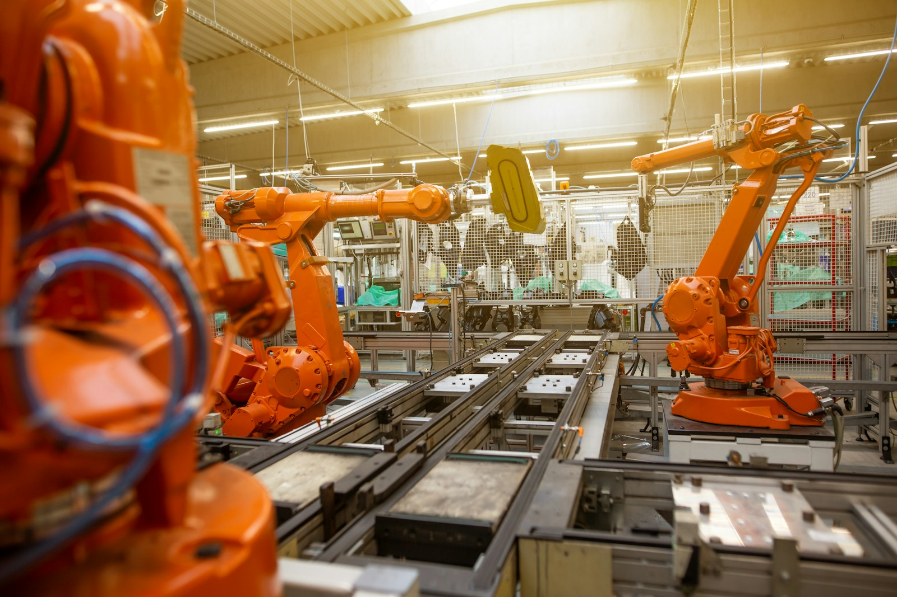

资讯动态
追踪行业变化，分享中心动态与研究观察
聚焦行业数智化转型，构建机械工业高质量发展新动能
围绕数据价值释放、转型能力提升和行业共性需求，持续完善数智化赋能服务体系。
阅读全文 →
机械工业运行总体平稳，产业结构持续优化升级
跟踪行业运行态势与重点领域变化，为产业分析与科学决策提供专业信息参考。
阅读全文 →
制造业数字化转型加速向全链条协同纵深推进
从单点技术应用走向流程重构与数据协同，数智化正在形成产业发展新优势。
阅读全文 →
机械工业数字化转型路径与实践研究成果发布
总结典型实践，提炼转型方法，为行业企业数字化建设提供可复用的经验参考。
阅读全文 →
数据要素加快融入机械工业研发、生产与服务环节
推动行业数据资源规范治理与安全流通，释放数据在产业协同中的应用价值。
阅读全文 →中心持续完善行业信息采集与专业内容服务机制
围绕重点领域和企业需求优化信息采集、分析与发布流程，提升行业信息服务质效。
阅读全文 →
智能装备应用场景持续拓展，制造体系加快柔性升级
智能机器人与数字化生产系统加速融合，为制造企业提质增效提供新的技术支撑。
阅读全文 →